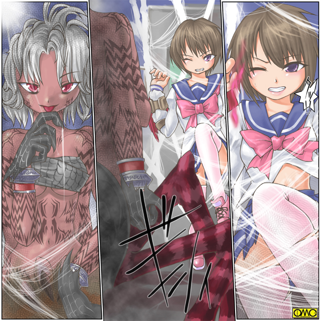

清良は太古の戦乙女。ヴァルキリアの一人。セーラの姿になった。
「なんだよ。なんで女の姿になったんだよ？」
「それがセーラ様本来のお姿です。ただ衣装だけは現代のそれに合わせてあるようですが」
使い魔のキャロルが説明する。
「わかんねーけど…こうなりゃやけだ」
わけもわからず突っ込んでいく。そのスピードは一流スプリンターを凌駕する。
（体が軽い？！ 女になったんなら筋肉がないはずなのに？）
疑問を解き明かしている暇はない。
かつては不良の男子だった女たちを軽く突き飛ばして道を作る。
「乱戦のの鉄則。大将を叩く」
一目散に蜘蛛の怪物に突っ込んでいく。
だが女郎蜘蛛は口から「槍」を吐き出した。糸を束ねて固めたやりだ。
「うおっ」
避けようとするがその速度ゆえに避けきれない。
清良…この姿ではやはりセーラと呼ぶのが相応しい。
セーラの腹部に「槍」が命中したかと思われた。
ところが槍はまったく刺さっていない。力なく落ちる。
「どうなってんだ？ どてっ腹ぶち抜かれたと思ったのに？」
「その服は軽いけど魔力で守られた『鎧』です。むき出しの部分も魔力で守られてます。そして魔力で腕力や脚力も並の男よりはるかに強くなってます。だから怯まずに戦ってください」
しかし敵もこの槍は本気で撃ったわけではないらしい。単なるけん制であったようだ。
その証拠に糸を吐きビルの屋上へと届かせると、あっという間にそれを使って逃げて行った。
残されたのは気絶している三人の女とセーラー服の少女。そして黒猫。
「説明してくれるんだろうな？」
「そりゃあもうよろこんで」
人間なら笑顔になりそうな口調である。
戦乙女セーラ
ＥＰＩＳＯＤＥ２「変身」
セーラはその姿を利用して高校の中へと入り込む。
もっとも本来はここの在校生なのだが。
そして体育用具室へと入る。
扉を閉めて一息。
「さて…話をする前にだが…どうやったら元に戻れるんだ？」
「えー。そのままでもいいのに」
「この姿で家に帰れるか？」
そう。戦乙女セーラは一時的な姿。
本来の高岩清良としての生活もある。それはキャロルも理解していた。
「戻るのでしたら戦う意識を解いてください。それで戻れます。まぁ意識を失えばもっと確実ですが」
「寝るにはまだ早いよ」
その台詞から怒気は感じられない。リラックスしようとしている。
それが功を奏してかフラッシュした後に一瞬で元の男子高校生に。
両腕の手甲は残っていたがそれも一瞬でリストバンドへと変化した。右手に赤。左手に青。
「なるほど。さっきは殴った…つまり戦うつもりだったから変身したわけか。で、詳しい話だが」
「はーい。説明いたしますです」
人間の女のような声の黒猫は得意げに説明を開始した。
アマッドネスの侵攻。ヴァルキリアと呼ばれる戦乙女の戦い。戦死。封印。それらを全て説明した。
「奴等は肉体は完全に滅んでいるのですが魂は封じてあるだけです。さすがのヴァルキリアたちもあの数はそこまで出来ませんでした。封印は効力を維持していたのですがさすがにそれも長い年月で」
「切れかけてきたわけか。しかしそれなら奴等はなんで一編に出てこないんだ？」
「魂だけではさすがのアマッドネスも何も出来ません。そこでヨリシロが必要となるのです。それにも相性がありまして。相性の悪い相手を選ぶともう一度死ぬまでその肉体で過ごす羽目になりますし」
「だから相方探しに時間が掛かるわけか？ あの蜘蛛女も誰かの変身した姿か」
「はい。便宜上スパイダーアマッドネスと呼称しますが、どうやらこの辺りでは最初に相手を見つけることに成功したようです」
「するとそのスパイダーアマッドネスに女へと変えられた連中の方は元に戻れるのか？」
「アマッドネスは女だけの一団です。だから配下も女だけです。彼らは残念ながら死ぬまで」
「女として生きる…か…死ぬよりゃマシだが」
ふと遠い目になる。それまで男として生きてきたのにいきなり女としての人生を歩まされる。
幼い頃から少しずつ『男を愛する覚悟』「体を捧げる覚悟」「妻となる覚悟」「子を為す覚悟」をしてきた生粋の女はいいかもしれない。
だが本来なら一生しなくていい覚悟を背負わされた「彼ら」に同情をしていたのだ。
「こういうのも…暴力って奴だな」
清良は不良のレッテルを貼られて入るが「かたぎ」には手を出していない。
あくまで降りかかる火の粉を払うだけである。
暴力を愛する存在ではないのだ。
「気に入らないな…そんな奴らのために誰かが泣く羽目になるなんてな」
脳裏に幼なじみの少女の姿が。
「セーラ様。生まれ変わってもお優しい」
「それだ。俺が本当にその『バルクリア』とかの生まれ変わりなのか？ まぁ実際に女に変身したんじゃ多少は信じざるを得ないが」
「間違いありません。あのお姿。あのお顔。まさにセーラ様」
「ふぅん。セーラー服着た巫女ねぇ」
「それなんですが…セーラ様も魔力で『布の鎧』を着てました。しかしあなたはあの形を選びましたが…それはカモフラージュのためですか？ 心の奥でのこだわりがでるようなんですが」
セーラー服のデザインは清良の通う高校のそれによく似ていた。
唯一違うのは胸元のピンクのリボンが巨大で、まるでプロテクターのようだったことだ。
「……キャロルだったな。この世で最強の生き物を知っているか？」
「へ？」
「それがあの服の理由なんだろうさ」
再び友紀の顔が目に浮かぶ。
（確かにアイツにだけは勝った覚えがない。いつしかセーラー服が苦手になっていたが…まさかこんな形で反映されるとはな）
「はぁ。皆さん同じようなことをなさるんですねぇ」
「ん？ 皆さん？ ちょっと待て。やけに事情に強いと思ったが…先に『ブレーザ』『ザンス』ってのが『復活』しているわけか？ だからお前はそれだけ事情を知っていると」
「ブレイザ様にジャンス様ですよ。お二人とも既に蘇えられてそれぞれの場所で戦っています」
こんな戦いが人知れず既に行われていたのか…彼はそれにも驚いた。
「既に１０８の魔物のうち３０体くらいは完全に倒されて浄化しています。しかし推測する限りこのエリアには全体の三分の一の３６体がそのままに」
いっそ気絶したいと清良は願った。
そのころ。安楽知由の姿に戻ったスパイダーアマッドネスは自宅に戻っていた。
（まさか高岩清良がヴァルキリア・セーラとはな）
既にスパイダーアマッドネスと知由の意識が混じり合ってきている。
両者の知識が混在している。だから学校の知識もあるし、太古の闘いの記憶もある。
（同胞に教えるか…いや。奴もまだ覚醒したてのようだな。三人の戦巫女の一人を葬ったとなればこのタランの評価もさぞかし上がるだろう。それにまだ出てきた奴等は少ないしな）
功名心に駆られたスパイダーアマッドネスは情報を流さずにいた。
清良も自宅へと戻る。
そしてベッドに倒れこむ。
「くたびれた…なんて一日だ…」
いきなり魔物に襲われ、そして変身して戦う。しかも女の子になっていた。そりゃ疲労もピークになる。
そのまま眠りにつく。
嫌でも朝は来る。
「おはよう」
友紀が屈託のない笑顔で朝の挨拶をする。
その顔を見つめる清良。
「ど…どうしたの。じっと見つめて。恥ずかしいじゃない」
「いや。なんでもねぇよ」
さり気ない会話。だが彼は決意を固めた。
清良は授業に集中できなかった。
（昨日はあのバケモノの気配が飛び込んできたが今日はまだか）
それを待つあまり憔悴していた。
結局は何もないまま放課後を迎える。
「あの…」
来訪者は気弱そうな少年だ。
清良とは逆に使い走りで名が知れていた安楽知由だった。
「何の用だ？」
「はい。高岩君を呼んでくるようにいわれて」
ちっ。清良は舌打ちをした。
「こんなときに」と言う思いと、言いなりになっているこの少年に対してである。
「わかったよ。相手してやる。どこだ？」
鬱憤晴らしもあり「ケンカの誘い」に応じることにした。
知由の先導で出向いた場所は屋上だった。しかしそこには誰もいなかった。
「待ち伏せか？ 呼び出してそれも間抜けだぜ」
「いいや。既に相手を見ているよ。セーラ」
背後からくぐもった女声。
「その声は？」
慌てて振り返るが知由だけ。その姿が変わる。スパイダーアマッドネスへと。
「お前が…まさか？」
貧弱な体の少年が戦闘に向いているとは思えなかった。
「セーラ様。アマッドネスはとりついた相手の肉体を変えてしまいます。元の性別や強さは関係ありません」
さすがは遣い魔。常に寄り添うということかあっという間にバトルフィールドに現れて助言を与えるキャロル。
「そーか。『天敵』の復活したばかりを狙ってきたってわけだ。だが俺は簡単にはやられねぇぞ」
戦意を高める。しかし簡単に「変身」は出来ない。
とりあえず逃げるが女郎蜘蛛が迫る。
（くそっ。何かスイッチがあれば…こんなヒーロー物だとまさにそれだが…）
迷っていたら見計らったようにキャロルがアドバイスを。
「セーラ様。戦意を高める儀式を。何かポーズなどを」
（うわ…やっぱりやるのか…変身ポーズ）
恥ずかしくてたまらない。だが躊躇しているうちにスパイダーアマッドネスが迫る。
四本の腕で攻撃をしてくる。四本だけに上下左右だ。
「くっ」
とっさに上の腕を右手で受けた。下の腕は左手で。やや動きの遅れた左右の腕を封じるべくそのまま反時計回りに九十度回す。
ちょうど水平に両手を広げた形だ。
ねじ伏せたものをいきなり離した。両腕を思い切り体にひきつけるとそのまま前方へとクロスさせつつ突き出して攻撃。
そして同時にやけくそで叫んだ。
「変身！」
クロスした赤と青のブレスレットがスパークした。一瞬にして清良はヴァルキリアになった。
「やった。意識の高揚に成功した」
無邪気に喜ぶキャロル。だがセーラは頬が赤い。
（は…恥ずかしい…）
考えてみればいくら肉体が女でも「女装」しているのである。
どういう原理なのか下着も変わっているらしい。胸元の感触と肩のストラップが存在を意識させる。
むき出しの脚にひらひらとまとわりつく短いスカート。
硬派を気取った少年には耐えがたかった。
そしてさらに「変身ポーズ」を取って、バケモノと戦っている。
（こんな茶番。さっさと終わらせよう）
このセーラー服が無敵の鎧なのは前日の放課後に証明されている。そして同じ相手との闘いだ。
だからお構いなしに突っ込んで行った。
大蜘蛛は槍をむちゃくちゃに放出してくる。それを度外視して走る。
何しろ自分の力がわからない。身の軽さと防御力だけだ。
間合いのある闘いもわからない。だから腕の届く範囲に接近を試みた。
しかしまともに接近できるはずもなかった。
いきなり体当たりを仕掛けてきた。
「うわっ」
確かに攻撃のダメージは肉体にはないが、物理的に吹っ飛ばされるのまでは防げない。
空に向かって吹っ飛ばされる。何かに引っかかって落下は免れた。だが
「こ…これは？ 動けない？」
槍はセーラの後ろで展開して網になっていたのだ。
セーラはその巨大な蜘蛛の網に貼り付けられていた。
戦闘開始からわずか二分で大ピンチに。
「くくくく。どうだ？ 磔の気分は？」
僅かに声に少年のものが混じる。
「お前たちのような腕力馬鹿はいい気になって僕のような人間を踏みつけにする。今度は僕がお前らを下におく。お前はその見せしめだ」
スパイダーーアマッドネスは功名心からセーラを磔にして公開処刑を選択した。
そしていじめられていた安楽知由は屈折した心で復讐心を抱いていた。

このイラストはＯＭＣによって作成されました。
クリエイターのていくあうとさんに感謝です。
「おい。なんだありゃ？」
放課後の運動部の面々が屋上を見上げる。
自分たちの学校の女子制服らしい服装の女の子が、空中に貼り付けられていた。
糸が遠くて彼らには見えなかった。
騒然となるもののあまりに非現実的すぎて行動を起こすものがいない。
「くそっ。張り付いて動けねぇ」
「セーラ様。脱ぎ捨てるんですよ。鎧を。そうすれば動けます」
「脱げッたってどうやって？ 腕もくっついてるんだ」
会話の間にもじわじわと蜘蛛が迫る。
どうやら勝利を確信して弄るつもりだ、
「お忘れですか？ 魔力の鎧です。意識すればはぜます。動きやすい服装をイメージしてください」
イメージは浮かんだ。しかしそれはセーラー服からの連想だった。
慌ててイメージを切り替えようとする。だが蜘蛛がもう近くに来ていた。選択の余地がなかった。
「イメージしたぞ。後はどうするんだ？」
「動けないならキーワードを叫んでください」
………またか。
げんなりとしてきた。
「ジャンス様やブレイザ様は『キャストオフ」と仰ってます」
「わかったよ。言えばいいんだろ」
殺されるよりマシだ。彼女は可愛らしい高い声で叫んだ。
「キャスト オフ」
その瞬間。セーラー服やプリーツスカートが弾け跳んだ。
その「弾丸」を食らった女郎蜘蛛はもんどりうって倒れる。
そしてセーラは脱出に成功した。
「ふう。自由に…なんじゃこりゃあっ？」
セーラー服が弾け飛んだその後の姿に絶叫した。
丸首の白いトップス。そしてヒップラインもろだしのアンダー。
彼女の姿は女子体操着姿であった。
「た…確かに動きやすいイメージだが…あああっ。女になるのが避けられないまでも、せめてブルマは…」
改めて姿を見よう。
頭部には眉間を守るべく赤い鉢巻が。
白い体操着。袖や襟元が紺色で縁取られている。
濃紺のブルマ。白いハイソックス。ピンクのスニーカー。
フィクションではよくあるが、現実には絶滅した女子体操着姿である。
「おのれぇっ」
何故か焦りを見せる巨大蜘蛛。
「セーラ様。気をつけて。今度はさっきまでと違って服の部分しか守られていません」
そういわれて慌てて攻撃を回避するセーラ。とんでもないところまで走ってしまう。
「なんだ？ 紙一重で避けたはずがこんな大回りに」
「防御に使っていた魔力が少なくなった分、それが運動能力に回ってます。加減してください」
「それを早く言え。つまりセーラー服姿は防御重視で、こっちは攻撃重視というわけだな」
それを理解したセーラは猛攻撃を開始した。
常に死角に回り込み攻撃を加えていく。そして確実にダメージを与えていく。
「くそぉぉぉぉぉっ」
大蜘蛛はまさにやけくそで正面から覆いかぶさろうとしてきた。
「このっ」
そのがら空きの腹部にセーラは左腕でチョップを見舞う。
まるで凍りついたように動かなくなるスパイダーアマッドネス。
「やった。アクアフリーズが決まった」
叫ぶ黒猫。女郎蜘蛛はフリーズの名の通りに凍てついていた。
「セーラ様。とどめに右の炎の拳で。中途半端では『氷』が溶けます」
「つまり一気に蒸発させろってわけ。任せて」
動かない相手である。サンドバックにパンチを叩き込むようなものだ。
「せーのぉ」
セーラは思い切りスイングして右のアッパーを叩き込む。
それは下腹部を切り裂き、胸を割り、あごを砕いて燃え上がる炎だった。
ちょうど十時のように攻撃を加えた。その真ん中から炎が上がる。
「ぐぎゃああああっっっ」
炎に包まれるスパイダーアマッドネス。もがき苦しむ。
「セーラ…殺す。やってやる。殺す。やってやる。殺す」
呪いの言葉を吐き続ける。だがその肉体が爆発四散する。この戦いは終わった。
「や…やった…いや…やっちゃった」
前半はバケモノ退治。しかしヨリシロとなっていた少年を殺してしまったことが後半の台詞に。
爆発が収まると蛍を思わせる小さな光が天へと登っていく。なんとなくそれを見送ってしまうセーラ。
「あれは？」
「スパイダーアマッドネスの魂です。やっと闘いの呪縛から解かれました」
「そっか…長い年月。人間だったことを忘れるほどの長さ。やっと逝けたわけね…そうだ。安楽は？」
自分が殺めたと思った「少年」を探す。しかしそこにいたのは全裸の少女。
「だ…誰？」
どことなく見覚えがある。
「たぶん…スパイダーアマッドネスに取り付かれていた少年じゃないかと」
「安楽ぅ？ こいつが。女だよ」
心なし口調が少女のそれになっているセーラ。
「魔力の攻撃ですのでダメージはアマッドネスだけに行きます。しかし再生したら遺伝子情報が欠けていて男だった場合みんな女になっちゃうんですよ」
「そうか…」
自分も少女の姿だがそれは戦いの時だけ。この少年だった存在は心の弱さに付け込まれて残りの生涯を女として生きる羽目になった。
それを思うと手放しで勝利を喜べなかった。
哀愁の漂う背中。しかし
「なんかすごい爆発があったぞ」
「空中に貼り付けられていた女の子もいたし」
「何があったんだ」
大勢の気配が。
「いけない。騒ぎで上がってきちゃった」
彼女は生徒たちが全裸の少女に気をとられている隙に階段を駆け下りて逃げた。
（それにしてもこれからどうなっちゃうの？）
そんなことを思いながら。
長い闘いの幕がまた開いた。